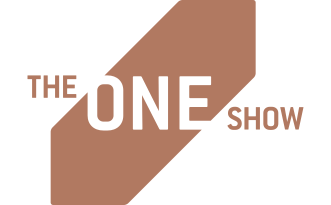
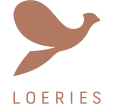

I’m a Zimbabwean designer, art director, and typographer based in New York. I specialize in crafting thoughtful, story-driven identities and design systems that merge research, symbolism, and strong visual form. With over a decade of experience leading creative projects across cultural, non-profit, and commercial sectors, I bring a distinctive sensitivity to visual language; balancing clarity, emotional resonance, and narrative intent across brand, editorial, and type design.
Awards



2023 — 2025
MFA in Graphic Design
Rhode Island School of Design
Providence, Rhode Island
United States of America
2010 — 2013
BTech in Graphic Design
University of Johannesburg
Johannesburg, South Africa
Resume | Curriculum vitae
tshumaosmond@gmail.com
@wakwatshuma
Go back home